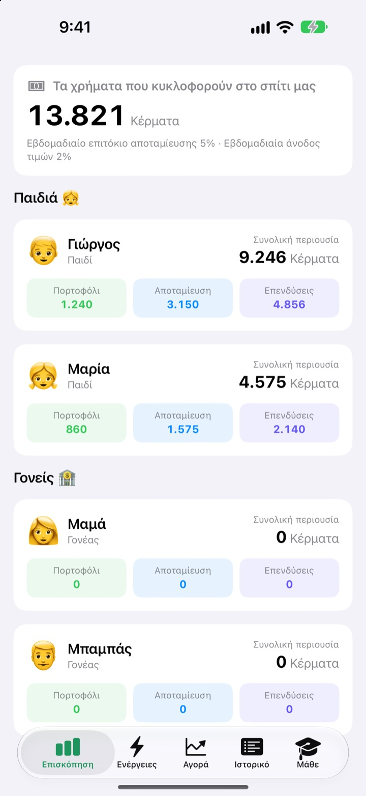
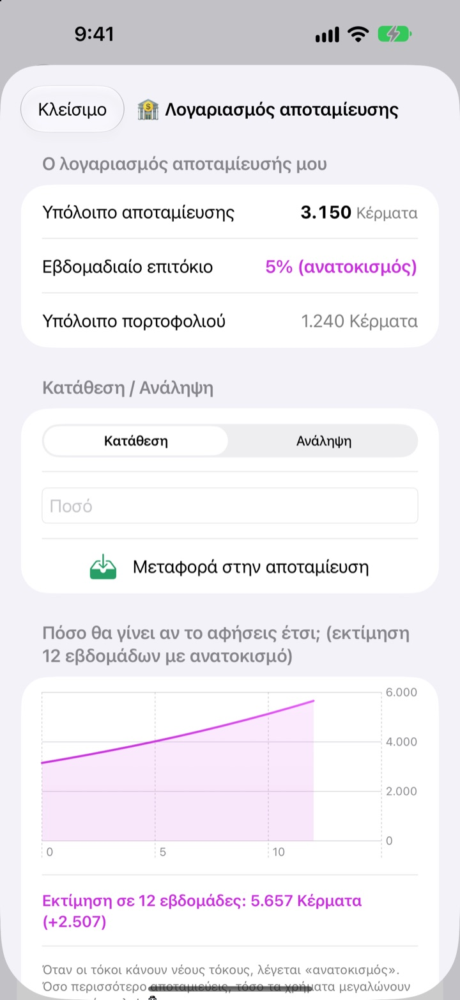
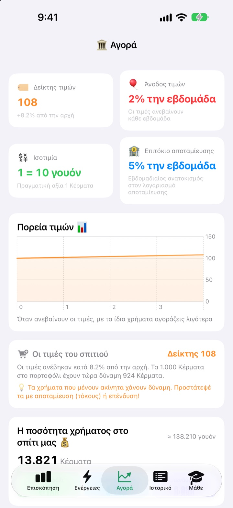
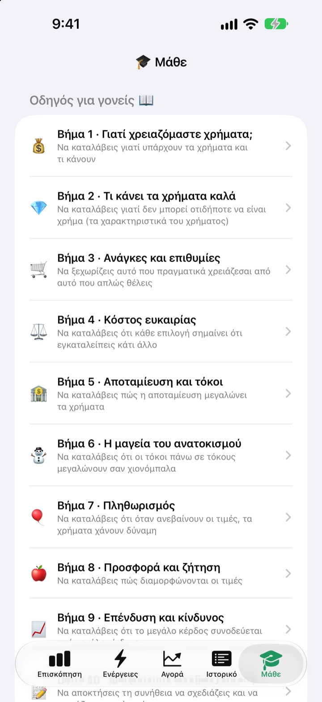

Το χαρτζιλίκι
γίνεται μάθημα
Εσείς είστε η κεντρική τράπεζα της οικογένειας και τα παιδιά οι πελάτες. Παίρνουν χαρτζιλίκι στο δικό σας νόμισμα, αγοράζουν λιχουδιές, βλέπουν τον τόκο να μπαίνει στην αποταμίευση και ζουν τα σκαμπανεβάσματα ενός ταμείου εξάσκησης.
Όλες οι λειτουργίες είναι δωρεάν. Δεν κινούνται ποτέ αληθινά χρήματα.

Πού θα κρατούσατε 1.000 κέρματα;
Τα ίδια 1.000 κέρματα βρίσκονται σε πορτοφόλι, σε αποταμίευση και σε τρία ταμεία. Προχωρήστε μία εβδομάδα τη φορά και δείτε τι γίνεται με το καθένα. Ισχύουν οι ίδιοι κανόνες με την εφαρμογή.
«Μάζεψέ τα και θα αυξηθούν». Το καταλαβαίνει στ’ αλήθεια ένα παιδί;
Τόκος, ανατοκισμός, πληθωρισμός: όσο περισσότερο τα εξηγείς, τόσο πιο μακρινά ακούγονται. Στο SukSuk Χαρτζιλίκι τα παιδιά κερδίζουν, ξοδεύουν και περιμένουν μόνα τους. Μόλις δουν τόκο πάνω στις αποταμιεύσεις της προηγούμενης εβδομάδας, το επόμενο χαρτζιλίκι πηγαίνει κατευθείαν στην αποταμίευση.
Η υπομονή φαίνεται
Τα χρήματα στην αποταμίευση παίρνουν ανατοκισμό κάθε εβδομάδα. Εσείς ορίζετε το επιτόκιο και ένα γράφημα δείχνει πόσα θα γίνουν σε 12 εβδομάδες αν μείνουν ανέγγιχτα.
Πέρασαν μέρες χωρίς να ανοίξει η εφαρμογή; Μόλις ανοίξει, πληρώνονται όλες οι εβδομάδες που χρωστάει μαζί.

Δείτε τις τιμές να τρώνε το πορτοφόλι
Η καρτέλα Αγορά συγκεντρώνει σε μία οθόνη τον δείκτη τιμών της οικογένειας, τον πληθωρισμό, το επιτόκιο, την ποσότητα χρήματος και τις τιμές των ταμείων. Καθώς ανεβαίνουν οι τιμές, φαίνεται πόσα λιγότερα αγοράζουν τα 1.000 κέρματα του πορτοφολιού.
Τα παιδιά βλέπουν με καθαρούς αριθμούς ότι τα χρήματα που μένουν αδρανή μικραίνουν, ενώ όσα αποταμιεύονται ή επενδύονται αντέχουν.

Δέκα κουβέντες να κάνετε μαζί
Ο οδηγός για γονείς σας καθοδηγεί σε δέκα βήματα: γιατί χρειαζόμαστε χρήματα, ανάγκες και επιθυμίες, κόστος ευκαιρίας, αποταμίευση και τόκος, ανατοκισμός, πληθωρισμός, επένδυση και ρίσκο, μέχρι τον προϋπολογισμό.
Ένας υπολογιστής ανατοκισμού και ένας υπολογιστής πειράματος τιμών σάς αφήνουν να αλλάζετε αριθμούς και να βλέπετε τι γίνεται.

Τρία βήματα για να ξεκινήσετε
- 1
Δώστε όνομα στο νόμισμα
Φασόλια, Αστέρια, Νομίσματα: όπως θέλει να το λέει η οικογένεια.
- 2
Ορίστε PIN γονέα
Τέσσερα ψηφία. Μόνο όποιος το ξέρει μπορεί να δίνει χαρτζιλίκι ή να αλλάζει τις ρυθμίσεις τράπεζας.
- 3
Προσθέστε την οικογένεια
Προσθέστε παιδιά και γονείς, δώστε το πρώτο χαρτζιλίκι και ξεκινήσατε.
Τι βρίσκεται πού
- Επισκόπηση
- Πορτοφόλι, αποταμίευση και επενδύσεις όλων με μια ματιά
- Ενέργειες
- Δώσε ή αφαίρεσε χαρτζιλίκι, Γραμμωτός κώδικας προϊόντος, Προσθήκη προϊόντος, Πρόσκληση παιδιού, Λειτουργία κινητού παιδιού, Ρυθμίσεις τράπεζας (απαιτείται PIN γονέα)
- Αγορά
- Δείκτης τιμών, πληθωρισμός, ισοτιμία, επιτόκιο αποταμίευσης, ποσότητα χρήματος, τιμές ταμείων
- Ιστορικό
- Κάθε κίνηση χρημάτων ανά ημερομηνία, μέλος ή είδος
- Μάθε
- Οδηγός για γονείς σε δέκα βήματα, υπολογιστής ανατοκισμού, υπολογιστής πειράματος τιμών
- 🐢 Σταθερό Ταμείο Χελώνα
- Μικρές ημερήσιες διακυμάνσεις, αργή και σταθερή άνοδος
- 🐰 Μετοχές Ανάπτυξης Λαγός
- Πάνω κάτω, αλλά μεγαλώνουν
- 🚀 Μετοχές Περιπέτειας Πύραυλος
- Μπορεί να εκτοξευτούν, μπορεί να βουτήξουν
Ξεκινά με εβδομαδιαίο επιτόκιο αποταμίευσης 5% και εβδομαδιαίο πληθωρισμό 2%. Αλλάζετε και τα δύο στη Λειτουργία γονέα, στις Ρυθμίσεις τράπεζας. Με πληθωρισμό 0% οι τιμές μένουν σταθερές.
Όλες οι λειτουργίες είναι δωρεάν
Δωρεάν
- Δικό σας οικογενειακό νόμισμα και Λειτουργία γονέα κλειδωμένη με PIN
- Χαρτζιλίκι και αφαιρέσεις, Το μαγαζί του σπιτιού και πληρωμές με γραμμωτό κώδικα
- Αποταμίευση με εβδομαδιαίο ανατοκισμό
- Τρία ταμεία εξάσκησης με γραφήματα απόδοσης
- Η καρτέλα Αγορά και ιστορικό συναλλαγών ανά ημερομηνία
- Ο οδηγός για γονείς σε δέκα βήματα και δύο υπολογιστές
- Λειτουργία κινητού παιδιού και συγχρονισμός μέσω iCloud
Στηρίξτε τον δημιουργό
- Στείλτε ένα μικρό φιλοδώρημα όποιου ποσού θέλετε από τις Ρυθμίσεις τράπεζας στη Λειτουργία γονέα
- Το φιλοδώρημα δεν ξεκλειδώνει τίποτα. Η εφαρμογή λειτουργεί ακριβώς το ίδιο
Χωρίς διαφημίσεις, χωρίς συνδρομή. Το κουμπί φιλοδωρήματος υπάρχει μόνο μέσα στη Λειτουργία γονέα, έτσι τα παιδιά δεν βλέπουν ποτέ κουμπί αγοράς.
Ερωτήσεις
Χρησιμοποιούνται αληθινά χρήματα;
Όχι. Το νόμισμα και όλες οι συναλλαγές στην εφαρμογή είναι ψεύτικα και υπάρχουν μόνο για μάθηση. Τίποτα δεν συνδέεται με πραγματικό τραπεζικό λογαριασμό, κάρτα ή μετρητά.
Πώς βλέπουμε τους ίδιους λογαριασμούς στο κινητό του παιδιού;
Οι συσκευές με τον ίδιο λογαριασμό iCloud συγχρονίζουν αυτόματα τους λογαριασμούς της οικογένειας. Ελέγξτε ότι το iCloud είναι ενεργό στις Ρυθμίσεις > Λογαριασμός Apple > iCloud. Στην καρτέλα Ενέργειες, από την Πρόσκληση παιδιού, μπορείτε να φτιάξετε πρόσκληση με κωδικό QR που το παιδί σαρώνει με την κάμερα. Χωρίς iCloud, τα δεδομένα μένουν μόνο σε εκείνη τη συσκευή.
Τι είναι η Λειτουργία κινητού παιδιού;
Κάνει το κινητό του παιδιού μια οθόνη μόνο για εκείνο. Βλέπει μόνο το δικό του πορτοφόλι, τις επενδύσεις, το ιστορικό και τα μαθήματα, και για να βγει χρειάζεται το PIN γονέα.
Ξέχασα το PIN γονέα.
Το PIN αποθηκεύεται μόνο στη συσκευή, οπότε ούτε ο δημιουργός μπορεί να το ανακτήσει. Αν διαγράψετε και εγκαταστήσετε ξανά την εφαρμογή, μπορείτε να τη ρυθμίσετε από την αρχή, αλλά θα σβηστούν και τα υπάρχοντα δεδομένα.
Πώς λειτουργεί ο τόκος αποταμίευσης;
Κάθε εβδομάδα προστίθεται αυτόματα ανατοκισμός στο υπόλοιπο της αποταμίευσης. Το επιτόκιο το ορίζετε στη Λειτουργία γονέα, και οι εβδομάδες που πέρασαν εκκαθαρίζονται την επόμενη φορά που θα ανοίξει η εφαρμογή.
Οι τιμές των ταμείων ακολουθούν την πραγματική αγορά;
Όχι. Είναι δεδομένα εξάσκησης που αλλάζουν μία φορά τη μέρα μέσα στην εφαρμογή. Όσο πιο ριψοκίνδυνο το ταμείο, τόσο μεγαλύτερες οι διακυμάνσεις. Δεν είναι πραγματικά χρηματοοικονομικά προϊόντα.
Γιατί ανεβαίνουν οι τιμές;
Για να νιώσουν τα παιδιά τον πληθωρισμό, ο δείκτης τιμών της οικογένειας ανεβαίνει λίγο κάθε εβδομάδα. Αλλάζετε τον ρυθμό, ή τον βάζετε στο 0% για να σταματήσει, στη Λειτουργία γονέα, στις Ρυθμίσεις τράπεζας. Αν ανεβάσετε λίγο και τις τιμές για λιχουδιές και παιχνίδια στο μαγαζί του σπιτιού, το μάθημα μένει πιο βαθιά.
Πώς τα σβήνω όλα;
Με τη διαγραφή της εφαρμογής σβήνονται τα δεδομένα της συσκευής. Για όσα έχουν συγχρονιστεί στο iCloud, πηγαίνετε στις Ρυθμίσεις > Λογαριασμός Apple > iCloud > Διαχείριση αποθηκευτικού χώρου και διαγράψτε τα δεδομένα της εφαρμογής.
Στέλνονται κάπου τα στοιχεία της οικογένειάς μου;
Όχι. Δεν υπάρχει εγγραφή, και όλα τα δεδομένα μένουν στη συσκευή σας και στον δικό σας λογαριασμό iCloud. Ο δημιουργός λαμβάνει μόνο σχόλια που στέλνετε εσείς από τη Λειτουργία γονέα, καθώς και ανώνυμα στατιστικά χρήσης και αναφορές σφαλμάτων.
Σε ποιες συσκευές λειτουργεί;
Σε iPhone με iOS 17.0 ή νεότερο.
Ερωτήσεις, σφάλματα ή ιδέες; Γράψτε στο leeo@kakao.com. Αν αναφέρετε το μοντέλο της συσκευής και την έκδοση iOS, θα βοηθήσουμε πιο γρήγορα.